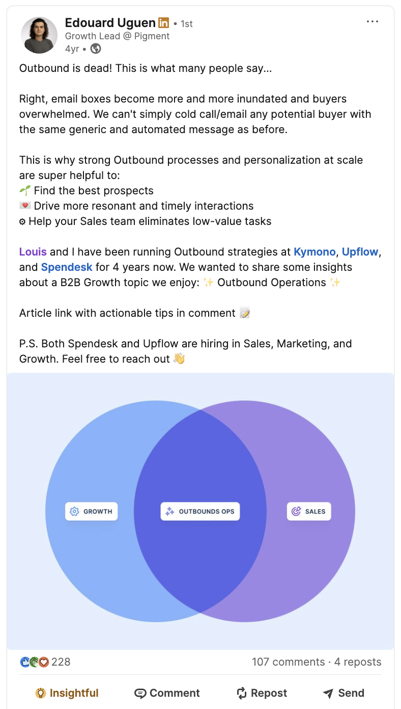
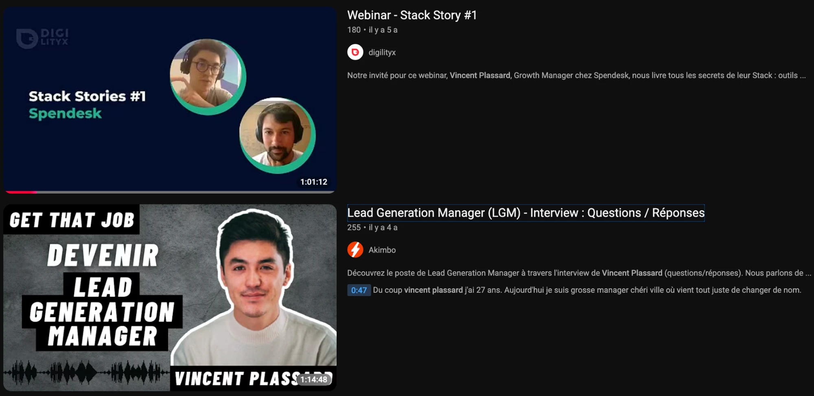
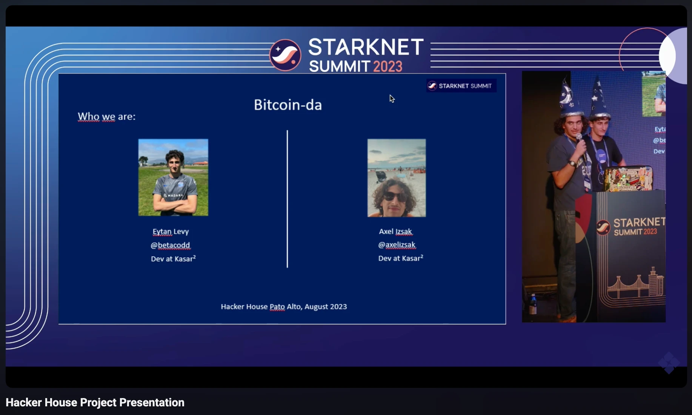
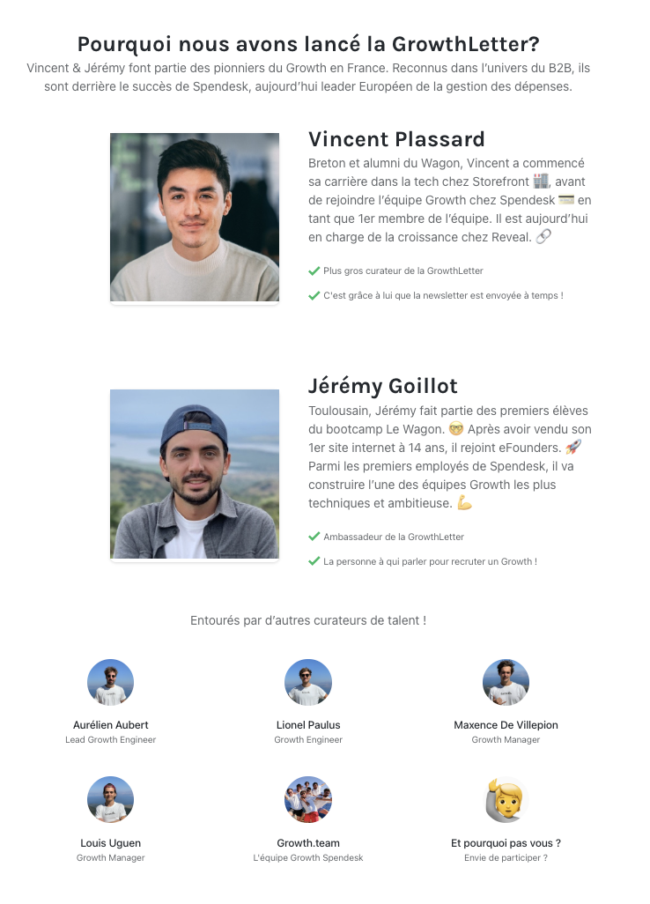
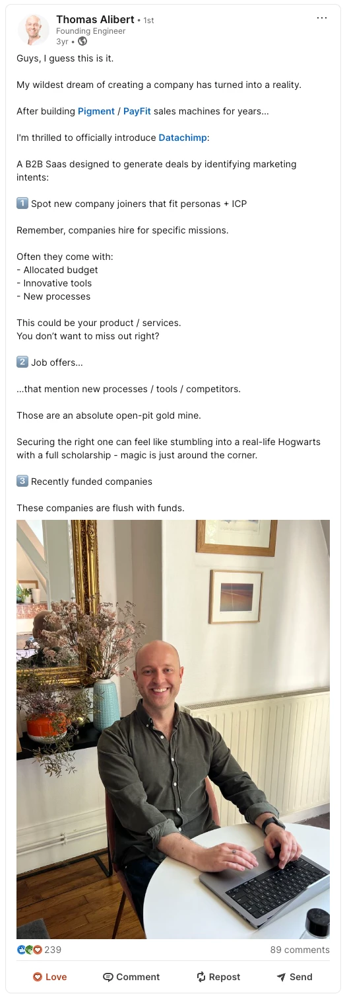
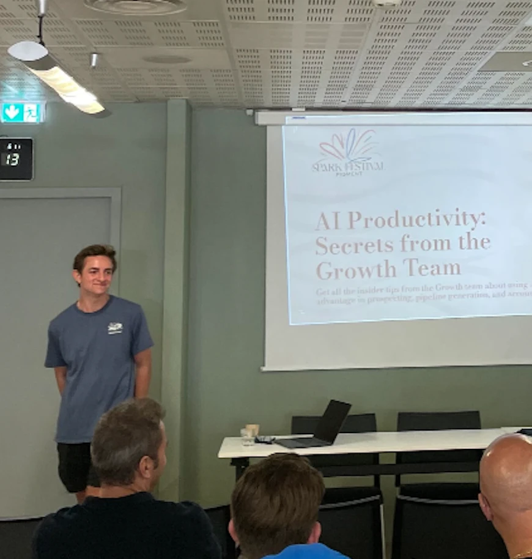

AI surfaces the ten conversations most likely to close — before you open your inbox.
We're not pitching a new idea.
We're finishing a seven-year-old one.






Same workflow. This time, it runs itself — every rep, every morning.
Legacy vendors still dominate the category. AI has just reset what buyers expect from software. That gap is Pigment's window.
Pigment has the product to win this shift. The question is who moves first.
"Our opportunity is larger than our sales capacity."
Every morning is a prioritization problem.
Not 1st-party data. Not 3rd-party data. Mixing both is the real power.
| Contact | Buying signal | Reason | Channel | Confidence |
|---|---|---|---|---|
| Sarah ChenVP Finance · Acme Corp | Previous user | Used Pigment at a former company — fast re-onboarding | SMS | 94% |
| Marcus WebbRevOps Director · Nova Logistics | New hire, past opportunity | Joined from an account in a prior pipeline deal | SMS | 90% |
| Priya IyerFP&A Manager · Halcyon Retail | Followed a competitor + Attended Event | New LinkedIn follow on a competitor's page this week | LinkedIn intro | 86% |
| David KimCIO · Meridian Health | AI Hiring Signal | Job posting mentions AI tooling for sales planning | 95% |
Show, don't tell.
1 unique experience per prospect — not a template with a mail-merge field.
Every morning starts with the right ten calls.